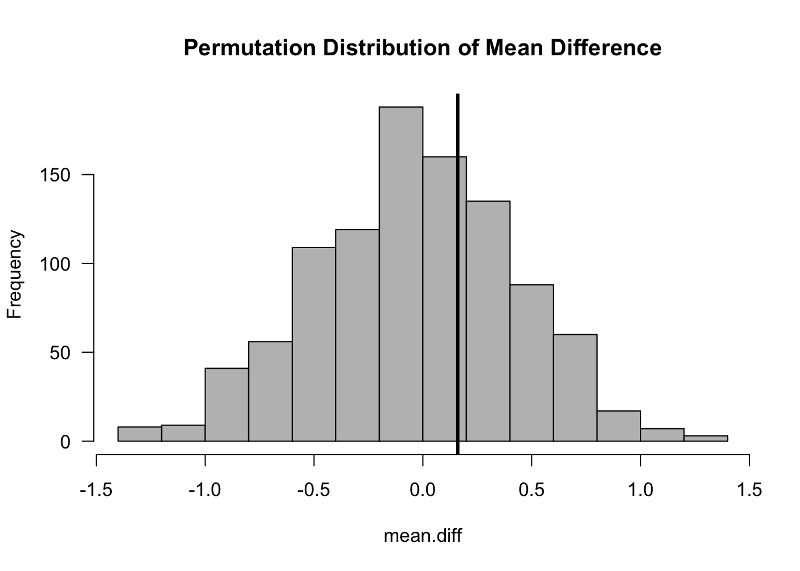
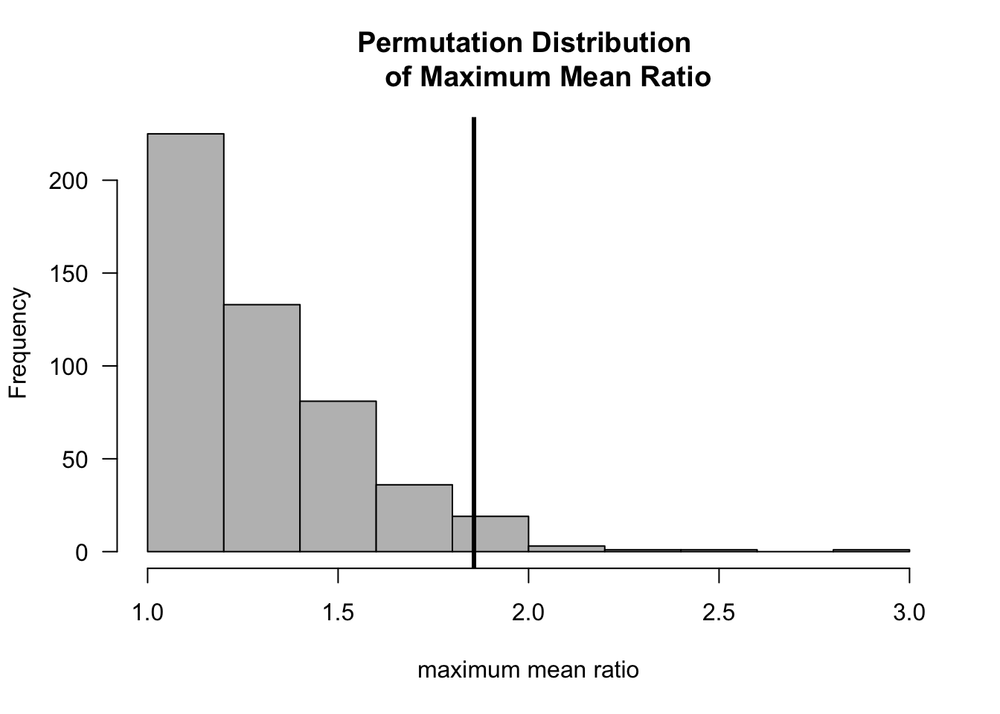
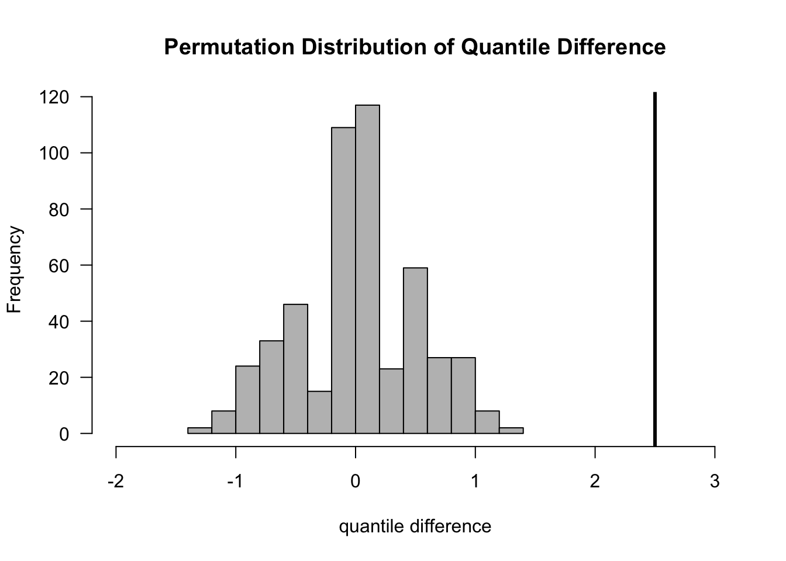
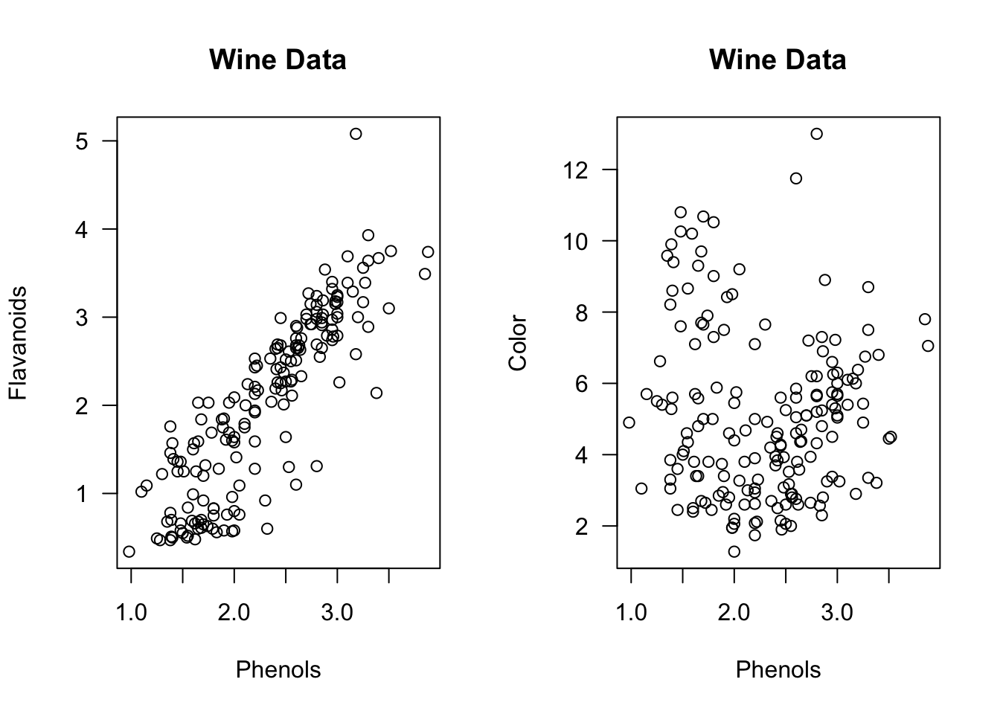
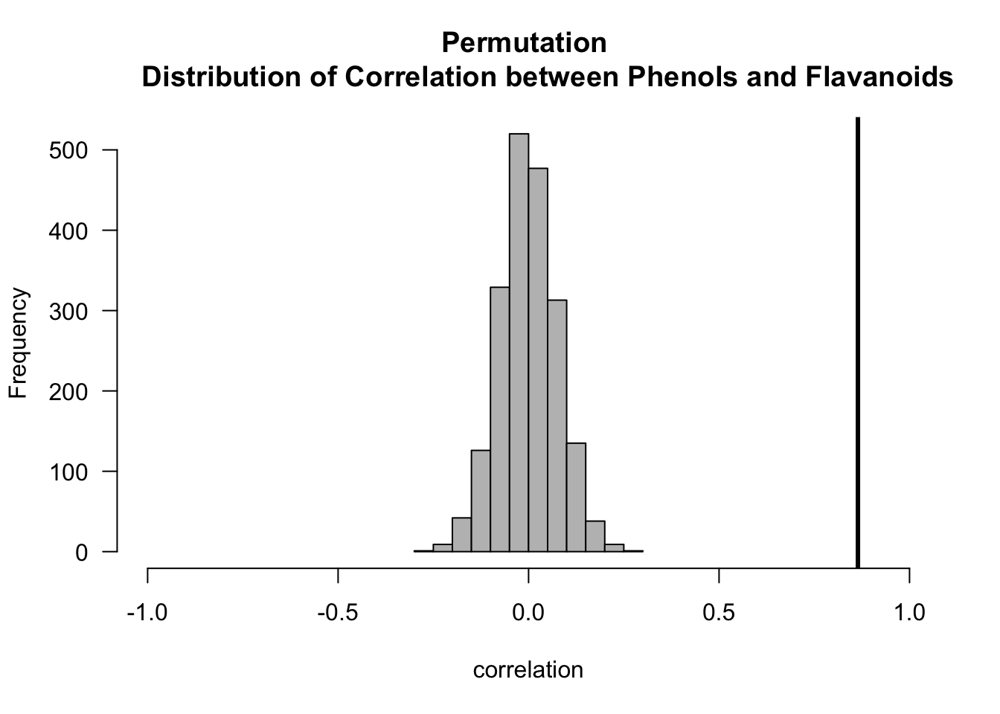
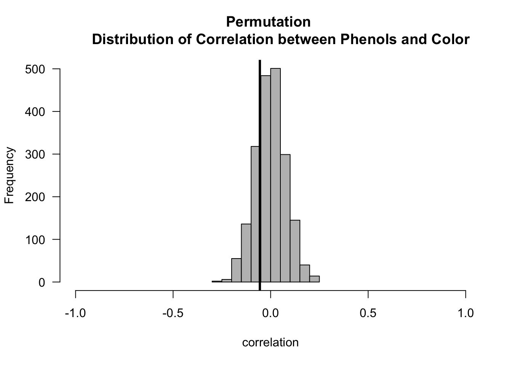
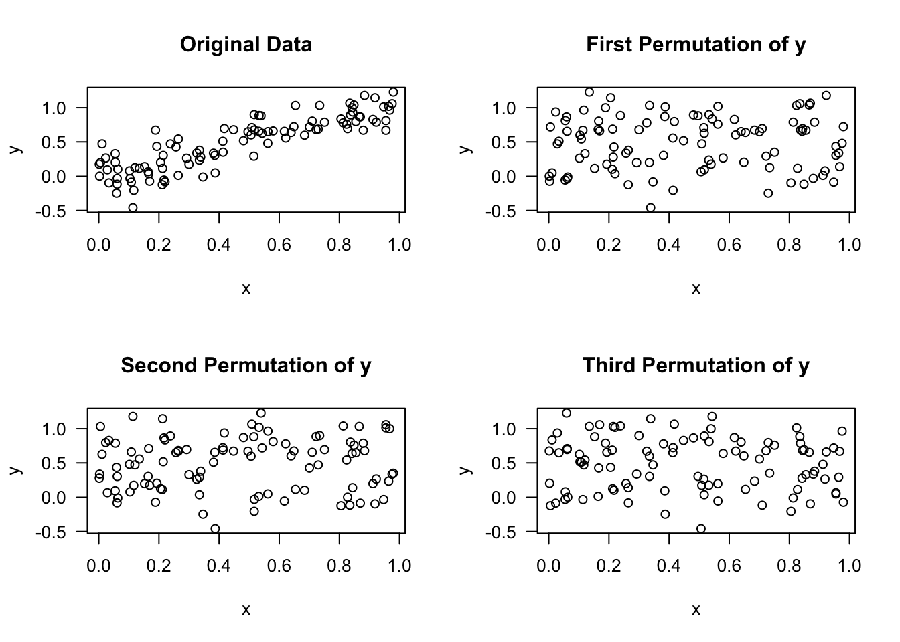

Chapter 5 Permutation Tests
Permutation tests are a useful tool that allows you to avoid depending on specific parametric assumptions.
Permutation tests are also useful in more complex modern applications where it can be difficult to work out the theoretical null distribution of the desired test statistic.
5.1 Notation
A permutation \(\pi\) of a set \(S\) is a function \(\pi: S \longrightarrow S\) is a function that is both one-to-one and onto.
We will usually think of \(S\) as the set of observation indices in which case \(S = \{1, \ldots, N\}\) for sample size \(N\).
Each permutation \(\pi\) of \(S = \{1, \ldots, N\}\) defines a particular ordering of the elements of \(S\). For this reason, a permutation is often expressed as the following ordered list \[\begin{equation} \pi = \big( \pi(1), \pi(2), \ldots, \pi(N) \big) \nonumber \end{equation}\]
In other words, we can think of a permutation of \(S\) as a particular ordering of the elements of \(S\).
For example, if \(S = \{1,2,3\}\), and \(\pi_{1}\) is a permutation of \(S\) defined as \(\pi_{1}(1) = 3\), \(\pi_{1}(2) = 1\), \(\pi_{1}(3) = 2\), then this permutation expressed as an ordered list would be \[\begin{equation} \pi_{1} = (3, 1, 2) \nonumber \end{equation}\]
There are \(5\) other possible permutations of \(S\): \[\begin{eqnarray} \pi_{2} &=& (1,2,3) \nonumber \\ \pi_{3} &=& (2,1,3) \nonumber \\ \pi_{4} &=& (1,3,2) \nonumber \\ \pi_{5} &=& (3,2,1) \nonumber \\ \pi_{6} &=& (2, 3, 1) \nonumber \end{eqnarray}\]
If \(S\) has \(N\) distinct elements, there are \(N!\) possible permutations of \(S\).
We will let \(\mathcal{S}_{N}\) denote the set of all permutations of the set \(\{1, \ldots, N\}\).
5.2 Permutation Tests for the Two-Sample Problem
- Permutation tests for two-sample problems are motivated by the following reasoning:
- If there is no real difference between the two groups, there is nothing “special” about the difference in means between the two groups.
- The observed difference in the mean between the two groups should not be notably different than mean differences from randomly formed groups.
- Forming “random” groups can be done by using many permutations of the original data.
5.2.1 Example 1
Suppose we have observations from two groups \(X_{1}, \ldots, X_{n} \sim F_{X}\) and \(Y_{1}, \ldots, Y_{m} \sim F_{Y}\).
Let \(\mathbf{Z} = (Z_{1}, \ldots, Z_{N})\) denote the pooled data \[\begin{equation} (Z_{1}, \ldots, Z_{N}) = (X_{1}, \ldots, X_{n}, Y_{1}, \ldots, Y_{m}) \end{equation}\]
For a permutation \(\pi\) of \(\{1, \ldots, N\}\), we will let \(\mathbf{Z}_{\pi}\) denote the corresponding permuted dataset \[\begin{equation} \mathbf{Z}_{\pi} = (Z_{\pi(1)}, Z_{\pi(2)}, \ldots, Z_{\pi(N)}) \end{equation}\]
| OriginalData | Perm1 | Perm2 | Perm3 | Perm4 | Perm5 | |
|---|---|---|---|---|---|---|
| z1 | 0.60 | -0.60 | 0.60 | -0.90 | 0.70 | 0.60 |
| z2 | -0.80 | -1.40 | -0.60 | 0.70 | -0.40 | -0.60 |
| z3 | -0.60 | 0.70 | 0.20 | 0.60 | -1.40 | -0.80 |
| z4 | -0.90 | 0.20 | -0.40 | 0.20 | 0.20 | 0.30 |
| z5 | 0.30 | -0.40 | -1.30 | -0.40 | -0.90 | -0.40 |
| z6 | -1.30 | -1.30 | -1.40 | -0.60 | -0.80 | 0.70 |
| z7 | 0.20 | 0.30 | 0.70 | -1.40 | 0.30 | -0.90 |
| z8 | 0.70 | 0.60 | 0.30 | -1.30 | 0.60 | 0.20 |
| z9 | -1.40 | -0.90 | -0.80 | 0.30 | -0.60 | -1.40 |
| z10 | -0.40 | -0.80 | -0.90 | -0.80 | -1.30 | -1.30 |
| mean difference | 0.16 | 0.12 | 0.12 | 0.80 | 0.00 | 0.36 |
For example, the columns in Table 5.1 are just permutations of the original data \(\mathbf{Z}\).
Suppose we want to base a test on the difference in the means between the two groups \[\begin{equation} T_{N}(\mathbf{Z}) = \bar{X} - \bar{Y} = \frac{1}{n}\sum_{i=1}^{n} Z_{i} - \frac{1}{m}\sum_{i=n+1}^{N} Z_{i} \end{equation}\]
We will let \(t_{obs}\) denote the observed value of the mean difference. That is, \(t_{obs} = T_{N}(\mathbf{Z}_{obs})\), where \(\mathbf{Z}_{obs}\) is the vector of the observed data.
Under the null hypothesis that \(F_{X} = F_{Y}\), the observed mean difference should not be “abnormal” when compared with the mean differences from many other permutations of the data.
z <- c(0.6, -0.8, -0.6, -0.9, 0.3, -1.3, 0.2, 0.7, -1.4, -0.4) ## data
observed.diff <- mean(z[1:5]) - mean(z[6:10]) ## observed mean difference
nperms <- 1000
mean.diff <- rep(NA, nperms)
for(k in 1:nperms) {
ss <- sample(1:10, size=10) ## draw a random permutation
z.perm <- z[ss] ## form the permuted dataset
mean.diff[k] <- mean(z.perm[1:5]) - mean(z.perm[6:10]) ## compute mean difference
## for permuted dataset
}
hist(mean.diff, las=1, col="grey", main="Permutation Distribution
of Mean Difference")
abline(v=observed.diff, lwd=3)
5.2.2 Permutation Test p-values
The one-sided p-value for the permutation test is \[\begin{eqnarray} \textrm{p-value} &=& \frac{\textrm{number of permutations such that } T_{N} \geq t_{obs}}{ N! } \nonumber \\ &=& \frac{1}{N!} \sum_{\pi \in \mathcal{S}_{N}} I\Big( T_{N}(\mathbf{Z}_{\pi}) \geq t_{obs} \Big) \nonumber \end{eqnarray}\]
The two-sided p-value for the two-sample problem would be \[\begin{equation} \textrm{p-value} = \frac{1}{N!} \sum_{\pi \in \mathcal{S}_{N}} I\Big( \Big| T_{N}(\mathbf{Z}_{\pi}) \Big| \geq |t_{obs}| \Big) \nonumber \end{equation}\]
As we did when producing the above histogram, the permutation-test p-value is often computed by using a large number of random permutations rather than computing the test statistic for every possible permutation.
The Monte Carlo permutation-test p-value is defined as \[\begin{equation} \textrm{p-value}_{mc} = \frac{1}{S+1}\Bigg[ 1 + \sum_{s = 1}^{S} I\Big( T_{N}(\mathbf{Z}_{\pi_{s}}) \geq t_{obs} \Big) \Bigg] \end{equation}\] where \(\pi_{1}, \ldots, \pi_{S}\) are randomly drawn permutations
The two-sided (Monte Carlo) p-value for the example shown in Table 5.1 is
## [1] 0.785.2.3 Example 2: Ratios of Means
With permutation tests, you are not limited to difference in means. You can choose the statistic \(T_{N}(\mathbf{Z})\) to measure other contrasts of interest.
For example, with nonnegative data you might be interested in the ratio of means between the two groups \[\begin{equation} T_{N}( \mathbf{Z} ) = \max\Big\{ \bar{X}/\bar{Y} , \bar{Y}/\bar{X} \Big\} \end{equation}\]
Let us see how this works for a simulated example with \(n = m = 20\) where we assume that \(X_{1}, \ldots, X_{n} \sim \textrm{Exponential}(1)\) and \(Y_{1}, \ldots, Y_{m} \sim \textrm{Exponential}(1/2)\).
set.seed(5127)
xx <- rexp(20, rate=1)
yy <- rexp(20, rate=0.5)
zz <- c(xx, yy) ## this is the original data
t.obs <- max(mean(zz[1:20])/mean(zz[21:40]), mean(zz[21:40])/mean(zz[1:20]))
nperms <- 500
mean.ratio <- rep(0, nperms)
for(k in 1:nperms) {
ss <- sample(1:40, size=40)
zz.perm <- zz[ss]
mean.ratio[k] <- max(mean(zz.perm[1:20])/mean(zz.perm[21:40]),
mean(zz.perm[21:40])/mean(zz.perm[1:20]))
}
hist(mean.ratio, las=1, col="grey", main="Permutation Distribution
of Maximum Mean Ratio", xlab="maximum mean ratio")
abline(v=t.obs, lwd=3)
- The two-side (Monte Carlo) permutation test p-value is:
## [1] 0.045.2.4 Example 3: Differences in Quantiles
Permutation tests are especially useful in problems where working out the null distribution is difficult, or when certain approximations of the null distributions are hard to justify.
An example of this occurrs if you want to compare medians, or more generally, compare quantiles between two groups.
The difference-in-quantiles statistic would be defined as \[\begin{equation} T_{N}( \mathbf{Z} ) = Q_{p}(Z_{1}, \ldots, Z_{n}) - Q_{p}(Z_{n+1}, \ldots, Z_{N}) \nonumber \end{equation}\] where \(Q_{p}(X_{1}, \ldots, X_{H})\) denotes the \(p^{th}\) quantile from the data \(X_{1}, \ldots, X_{H}\).
The difference in quantiles could be computed with the following R code:
## 30%
## 0.2671133- Note that setting probs=.5 in the quantile function will return the median.

- Exercise 5.1 Suppose we have the following data from two groups
\((X_{1}, X_{2}, X_{3}) = (-1, 0, 1)\) and \((Y_{1}, Y_{2}, Y_{3}) = (4, -2, 2)\).
Compute the (two-sided) permutation p-value for the following two statistics:
- \(T_{N}( \mathbf{Z} ) = \textrm{median}(X_{1}, X_{2}, X_{3}) - \textrm{median}(Y_{1}, Y_{2}, Y_{3})\).
- \(T_{N}( \mathbf{Z} ) = \bar{X} - \bar{Y}\).
Exercise 5.2. Suppose we have data from two groups such that \(X_{1}, \ldots, X_{n} \sim \textrm{Normal}(0, 1)\) and \(Y_{1}, \ldots, Y_{m} \sim \textrm{Normal}(1, 1)\). Using \(n=m=50\) and 500 simulation replications, compute \(500\) significance thresholds from the one-sided permutation test which uses the statistic \(T_{N}( \mathbf{Z} ) = \bar{X} - \bar{Y}\). How, does this compare with the t-statistic threshold of approximately \(1.64*\sqrt{2/50}\)?
Exercise 5.3. Suppose we have data from two groups such that \(X_{1}, \ldots, X_{n} \sim \textrm{Normal}(0, 1)\) and \(Y_{1}, \ldots, Y_{m} \sim \textrm{Normal}(1, 1)\). Using \(n=m=50\) and 500 simulation replications, compute the power of the permutation test which uses the statistic \(T_{N}( \mathbf{Z} ) = \bar{X} - \bar{Y}\) to detect this true alternative. How, does the power compare with the (two-sided) two-sample t-statistic and the (two-sided) Wilcoxon rank sum test?
5.3 The Permutation Test as a Conditional Test
A permutation test is an example of a conditional test.
Typically, the p-value is defined as \[\begin{equation} \textrm{p-value} = P(T \geq t_{obs}|H_{0}) \end{equation}\] for some test statistic \(T\).
In other words, the p-value is the probability that a random variable which follows the null distribution exceeds \(t_{obs}\).
In many problems however, the null hypothesis \(H_{0}\) is not determined by a single parameter but contains many parameters.
For example, the null hypothesis in a t-test is really \(H_{0}: \mu_{x} = \mu_{y}\) and \(\sigma > 0\). That is, the null hypothesis is true for many different values of \(\sigma\).
When \(H_{0}\) contains many parameter values, one approach for computing a p-value is to choose the test statistic \(T\) so that its distribution is the same for every point in \(H_{0}\).
A more general approach is to instead compute a conditional p-value
A conditional p-value is defined as \[\begin{equation} \textrm{p-value} = P(T \geq t_{obs}| S=s, H_{0}) \nonumber \end{equation}\] where \(S\) is a sufficient statistic for the unknown terms in \(H_{0}\).
A classic example of this is Fisher’s exact test.
A permutation test computes a conditional p-value where the sufficient statistic is the vector of order statistics \((Z_{(1)}, Z_{(2)}, \ldots,Z_{(N)})\).
Recall that the order statistics are defined as \[\begin{eqnarray} Z_{(1)} &=& \textrm{ smallest observation } \nonumber \\ Z_{(2)} &=& \textrm{ second smallest observation} \nonumber \\ & \vdots & \nonumber \\ Z_{(N)} &=& \textrm{ largest observation} \nonumber \end{eqnarray}\]
What is the conditional distribution of the observed data conditional on the observed order statistics?
It is: \[\begin{eqnarray} f_{Z_{1}, \ldots, Z_{N}|Z_{(1)}, \ldots, Z_{(N)}}( z_{\pi(1)}, \ldots, z_{\pi(N)} | z_{1}, \ldots, z_{N}) &=& \frac{f_{Z_{1}, \ldots, Z_{N}}( z_{\pi(1)}, \ldots, z_{\pi(N)} ) }{ f_{Z_{(1)},\ldots,Z_{(N)}}(z_{1}, \ldots, z_{N}) } \nonumber \\ &=& \frac{f_{Z_{i}}(z_{\pi(1)}) \cdots f_{Z_{i}}(z_{\pi(N)})}{ N!f_{Z_{i}}(z_{1}) \cdots f_{Z_{i}}(z_{N}) } \nonumber \\ &=& \frac{1}{N!} \nonumber \end{eqnarray}\] (See Chapter 5 of Casella and Berger (2002) for a detailed description of the distribution of order statistics)
In other words, if we know the value of: \(Z_{(1)}=z_{1}, \ldots, Z_{(N)} = z_{N}\), then any event of the form \(\{ Z_{1} = z_{\pi(1)}, \ldots, Z_{N} = z_{\pi(N)} \}\) has an equal probability of occurring for any permutation chosen.
This equal probability of \(1/N!\) is only true under \(H_{0}\) where we can regard the data as coming from a common distribution.
If we are conditioning on \(Z_{(1)}=z_{1}, \ldots, Z_{(N)} = z_{N}\), then the probability that \(T_{N}(Z_{1}, \ldots, Z_{N}) \geq t\) is just the number of permutations of \((z_{1}, \ldots, z_{N})\) where the test statistic is greater than \(t\) divided by \(N!\).
In other words \[\begin{eqnarray} & & P\Big\{ T_{N}(Z_{1}, \ldots, Z_{N}) \geq t| Z_{(1)} = z_{1}, \ldots, Z_{(N)} = z_{N} \Big\} \\ &=& \frac{1}{N!} \sum_{\pi \in \mathcal{S}_{N}} I\Big( T_{N}(z_{\pi(1)}, \ldots, z_{\pi(N)}) \geq t \Big) \end{eqnarray}\]
Let us now consider a concrete example.
Suppose we have a two-sample problem with four observations. The first two observations come from the first group while the last two observations come from the second group.
The order statistics that we will condition on are: \[\begin{eqnarray} Z_{(1)} &=& z_{1} = -3 \\ Z_{(2)} &=& z_{2} = -1 \\ Z_{(3)} &=& z_{3} = 2 \\ Z_{(4)} &=& z_{4} = 5 \end{eqnarray}\]
If \(T_{4}\) is the mean difference \[\begin{equation} T_{4}(Z_{1}, Z_{2},Z_{3},Z_{4}) = \frac{Z_{1} + Z_{2} - Z_{3} - Z_{4}}{2} \end{equation}\] what is the probability \[\begin{equation} P\Big\{ T_{4}(Z_{1}, Z_{2}, Z_{3}, Z_{4}) \geq 2.5 | Z_{(1)}=z_{1}, Z_{(2)}=z_{2}, Z_{(3)}=z_{3}, Z_{(4)} = z_{4} \Big \} \end{equation}\]
From the below table, we see that the number of times \(T_{4} \geq 2.5\) occurs is \(8\). Hence, \[\begin{eqnarray} & & P\Big\{ T_{4}(Z_{1}, Z_{2}, Z_{3}, Z_{4}) \geq 2.5 | Z_{(1)}=z_{1}, Z_{(2)}=z_{2}, Z_{(3)}=z_{3}, Z_{(4)} = z_{4} \Big \} \nonumber \\ &=& 8/24 = 1/3. \nonumber \end{eqnarray}\]
| a1 | a2 | a3 | a4 | P(Z1 = a1, Z2=a2, Z3=a3, Z4=a4|order stat) | T(a1, a2, a3, a4) | T(a1, a2, a3, a4) >= 2.5 |
|---|---|---|---|---|---|---|
| -3 | -1 | 2 | 5 | 1/24 | -5.50 | 0 |
| -3 | -1 | 5 | 2 | 1/24 | -5.50 | 0 |
| -3 | 2 | -1 | 5 | 1/24 | -2.50 | 0 |
| -3 | 2 | 5 | -1 | 1/24 | -2.50 | 0 |
| -3 | 5 | -1 | 2 | 1/24 | 0.50 | 0 |
| -3 | 5 | 2 | -1 | 1/24 | 0.50 | 0 |
| -1 | -3 | 2 | 5 | 1/24 | -5.50 | 0 |
| -1 | -3 | 5 | 2 | 1/24 | -5.50 | 0 |
| -1 | 2 | -3 | 5 | 1/24 | -0.50 | 0 |
| -1 | 2 | 5 | -3 | 1/24 | -0.50 | 0 |
| -1 | 5 | -3 | 2 | 1/24 | 2.50 | 1 |
| -1 | 5 | 2 | -3 | 1/24 | 2.50 | 1 |
| 2 | -3 | -1 | 5 | 1/24 | -2.50 | 0 |
| 2 | -3 | 5 | -1 | 1/24 | -2.50 | 0 |
| 2 | -1 | -3 | 5 | 1/24 | -0.50 | 0 |
| 2 | -1 | 5 | -3 | 1/24 | -0.50 | 0 |
| 2 | 5 | -3 | -1 | 1/24 | 5.50 | 1 |
| 2 | 5 | -1 | -3 | 1/24 | 5.50 | 1 |
| 5 | -3 | -1 | 2 | 1/24 | 0.50 | 0 |
| 5 | -3 | 2 | -1 | 1/24 | 0.50 | 0 |
| 5 | -1 | -3 | 2 | 1/24 | 2.50 | 1 |
| 5 | -1 | 2 | -3 | 1/24 | 2.50 | 1 |
| 5 | 2 | -3 | -1 | 1/24 | 5.50 | 1 |
| 5 | 2 | -1 | -3 | 1/24 | 5.50 | 1 |
5.4 A Permutation Test for Correlation

Suppose we have \(N\) pairs of observations \((U_{1}, V_{1}), \ldots, (U_{N}, V_{N})\)
The correlation between these pairs is defined as \[\begin{equation} \rho_{UV} = \frac{\textrm{Cov}(U_{i}, V_{i})}{\sigma_{U}\sigma_{V}} \end{equation}\]
The test statistic of interest here is the sample correlation \[\begin{equation} T_{N}(\mathbf{U}, \mathbf{V}) = \frac{\sum_{i=1}^{N}(U_{i} - \bar{U})(V_{i} - \bar{V})}{\sqrt{ \sum_{i=1}^{N}(U_{i} - \bar{U})^{2}\sum_{i=1}^{N}(V_{i} - \bar{V})^{2}} } \end{equation}\]
To find the the permutation distribution, we only need to look at \(T_{N}(\mathbf{U}_{\pi}, \mathbf{V})\) for different permutations \(\pi\).
In other words, we are computing correlation among pairs of the form \((U_{\pi(1)}, V_{1}), \ldots, (U_{\pi(N)}, V_{N})\).
We only need to look at \(\mathbf{U}_{\pi}\) because this achieves the objective of randomly “switching observation pairs”.
- The two-sided p-value for the permutation test of \(H_{0}: \rho_{UV} = 0\) vs. \(H_{A}: \rho_{UV} \neq 0\) is \[\begin{equation} \textrm{p-value} = \frac{1}{N!} \sum_{\pi \in \mathcal{S}_{N}} I\Big( \Big| T_{N}(\mathbf{U}_{\pi}, \mathbf{V}) \Big| \geq |t_{obs}| \Big) \nonumber \end{equation}\]
library(rattle.data)
## Computing the permutation distribution for correlation
## between flavanoids and phenols
n.obs <- nrow(wine) ## number of observations
t.obs.pf <- cor(wine$Phenols, wine$Flavanoids) ## observed correlation
nperms <- 2000
cor.perm.pf <- rep(0, nperms)
for(k in 1:nperms) {
ss <- sample(1:n.obs, size=n.obs)
uu.perm <- wine$Phenols[ss]
cor.perm.pf[k] <- cor(uu.perm, wine$Flavanoids)
}
hist(cor.perm.pf, xlim=c(-1, 1), las=1, col="grey", main="Permutation
Distribution of Correlation between Phenols and Flavanoids",
xlab="correlation")
abline(v=t.obs.pf, lwd=3)

- Now let us compute the p-values for both the Phenols/Flavanoids and Phenols/Color association tests.
# p-value for correlation between Phenols/Flavanoids
pval.mc <- (1 + sum(abs(cor.perm.pf) >= abs(t.obs.pf)))/(nperms + 1)
round(pval.mc, 4)## [1] 5e-04# p-value for correlation between Phenols/Color
pval.mc <- (1 + sum(abs(cor.perm.pc) >= abs(t.obs.pc)))/(nperms + 1)
round(pval.mc, 4)## [1] 0.46485.5 A Permutation Test for Variable Importance in Regression and Machine Learning
The idea of permutation testing can also be applied in the context of regression.
In regression, we have a series of responses \(y_{1}, \ldots, y_{N}\), and we have a series of associated covariates vectors \(\mathbf{x}_{i}\).
For regression, we are going to perform permutations on the vector of responses \(\mathbf{y} = (y_{1}, \ldots, y_{N})\) and compute some measure for each permutation.
For example, we might compute some measure of variable importance for each permutation.
The idea here is that when permuting \(\mathbf{y}\), the association between \(\mathbf{y}\) and any “important covariates” should be lost.
We want to see what the typical values of our variable importance measures will be when we break any association between \(\mathbf{y}\) and a covariate.

The approach of permuting the response vector can be useful in the context of difficult-to-interpret variable importance measures or variable importance measures which are known to have certain biases.
This idea has been suggested as an alternative way of measuring variable importance for random forests (see e.g., Altmann et al. (2010) or Nembrini (2019))
With these approaches, we permute the response vector \(\mathbf{y}\) many times.
A permutation p-value for the importance of a particular variable will be the proportion of permutations where that variable’s importance score exceeded the importance score from the original data. (In this case, a smaller p-value would mean the variable was more important).
Specifically, the permutation p-value for the importance of variable \(h\) would be given by \[\begin{equation} \textrm{p-value}_{h} = \frac{1}{N!}\sum_{\pi \in \mathcal{S}_{N}} I\Big( s_{h}(\mathbf{y}_{\pi}, \mathbf{X}) \geq s_{h}(\mathbf{y}, \mathbf{X}) \Big) \tag{5.1} \end{equation}\] where \(\mathbf{y}\) denotes the vector of responses and \(\mathbf{X}\) denotes the design matrix.
Here, \(s_{h}(\mathbf{y}, \mathbf{X})\) denotes the variable importance score for variable \(h\) when using reponse vector \(\mathbf{y}\) and design matrix \(\mathbf{X}\).
Note that the formula (5.1) could be applied in the context of any method that generates a variable importance score from \(\mathbf{y}\) and \(\mathbf{X}\).
Let us see an example of that if we look at a random forest model for predicting wine type from the wine data.
First, we will load the data and fit a random forest model.
## randomForest 4.6-14## Type rfNews() to see new features/changes/bug fixes.wine2 <- subset(wine, Type==1 | Type==2)
wine2$Type <- factor(wine2$Type)
X <- model.matrix(Type ~ . -1, data=wine2)
yy <- wine2$Type
n <- length(yy)
nvars <- ncol(X)
## Variable importance scores using original data
originalRF <- randomForest(X, y=yy)
var.imp <- originalRF$importance
var.imp## MeanDecreaseGini
## Alcohol 16.4477773
## Malic 1.6547628
## Ash 0.9512346
## Alcalinity 1.8280983
## Magnesium 4.2799222
## Phenols 2.4436762
## Flavanoids 6.2584880
## Nonflavanoids 0.5184224
## Proanthocyanins 0.6201685
## Color 10.0968269
## Hue 0.5552606
## Dilution 1.0398252
## Proline 17.3324599- Now, let us compare these original variable importance scores with the importance scores obtained across 10,000 permuted datasets.
nperm <- 10000
VarImpMat <- matrix(0, nrow=nperm, ncol=ncol(X))
for(k in 1:nperm) {
ytmp <- yy[sample(1:n,size=n)]
rf.fit <- randomForest(X, y=ytmp)
VarImpMat[k,] <- rf.fit$importance
## VarImpMat[k,h] contains the importance score of
## variable h in permutation k
}
perm.pval <- rep(0, nvars)
for(h in 1:nvars) {
perm.pval[h] <- (1 + sum(VarImpMat[,h] >= var.imp[h]))/(nperm + 1)
}| Permutation p-val | |
|---|---|
| Alcohol | 0.000 |
| Malic | 1.000 |
| Ash | 1.000 |
| Alcalinity | 1.000 |
| Magnesium | 0.923 |
| Phenols | 1.000 |
| Flavanoids | 0.080 |
| Nonflavanoids | 1.000 |
| Proanthocyanins | 1.000 |
| Color | 0.000 |
| Hue | 1.000 |
| Dilution | 1.000 |
| Proline | 0.000 |
References
Altmann, André, Laura Toloşi, Oliver Sander, and Thomas Lengauer. 2010. “Permutation Importance: A Corrected Feature Importance Measure.” Bioinformatics 26 (10). Oxford University Press: 1340–7.
Casella, George, and Roger L Berger. 2002. Statistical Inference. Vol. 2. Duxbury Pacific Grove, CA.
Nembrini, Stefano. 2019. “On What to Permute in Test-Based Approaches for Variable Importance Measures in Random Forests.” Bioinformatics 35 (15). Oxford University Press: 2701–5.